The slide of the lecture is on the left, the same figure or table on the right, computed in the browser from the same data. The ▶ button moves the parameter step by step; the tables and worked examples are recomputed with it.
The Candidates · Review of Maximum Likelihood Estimation · Nested Models: the Likelihood-Ratio Test · Information Criteria: AIC and BIC · Goodness-of-Fit Tests · PP and QQ Plots · Comparing the Models on VaR 1% · Out of Sample: Validation and Overfitting · Model Uncertainty
The Candidates
The Candidates Side by Side
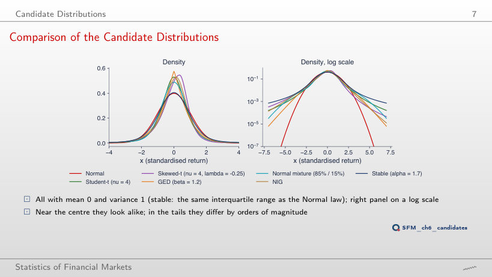
P(X < −x) for each candidate (mean 0, variance 1)
Answer
About 536,000 times: 5.3 × 10−4 against 9.9 × 10−10. At x = 2 the two probabilities are almost equal (ratio 1.0), at x = 3 the ratio is 4.9, at x = 5 it is 3,682. The Normal tail falls as e−x²/2, the Student-t tail as a power of x, so the ratio grows ever faster with the threshold. The mean and the variance are the same; the difference lies only in the tail, where VaR 1% sits.
What Every Model Must Reproduce: the SFESumm Statistics
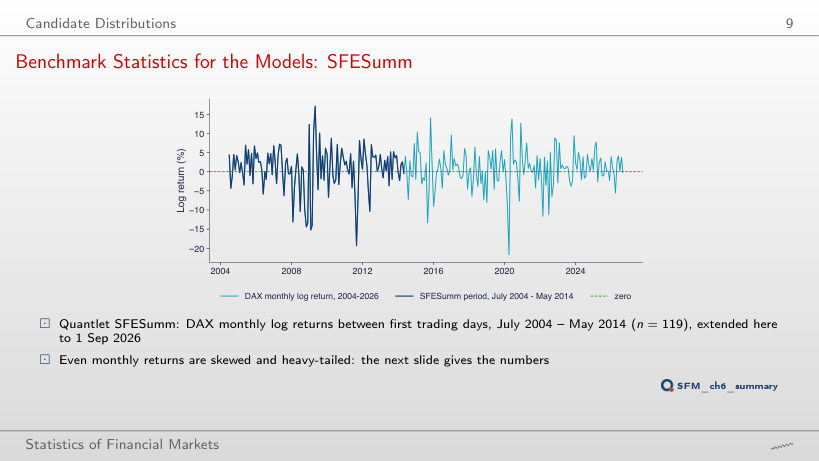
Summary statistics, DAX monthly log returns (%)
Answer
No. Between 2014 and 2019 it falls, to 4.30 in May 2016, because the months added are calm. It jumps to 4.93 when the return from early March to early April 2020 enters, −21.70%, the new minimum of the sample (the old one was −19.35%). The kurtosis depends on a few extreme months, not on the number of months. On 2004–2026 the skewness stays negative (−0.72), and the Jarque–Bera test rejects Normality with JB = 70.2.
Summary Statistics: Monthly DAX and Daily Returns
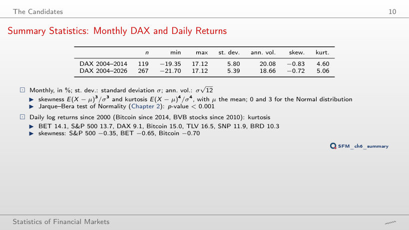
Daily log returns (%)
Worked example: the Jarque–Bera test
Answer
20.5. Kurtosis uses the fourth power of the deviations from the mean, so two extreme days move it a lot, even though their sum, +5.5%, is small. The skewness moves from −0.87 to −0.58. In the lecture, ν̂ of the Student-t falls from 3.44 to 3.33, and the AIC ranking does not change (Student-t wins in both cases). The JB of TLV rises too, because (K − 3)² rises.
Review of Maximum Likelihood Estimation
Numerical ML for the Other Candidates (S&P 500)
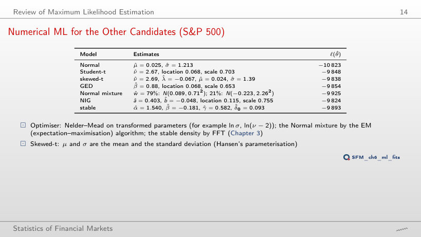
ML estimates and the maximised log-likelihood
Worked example: the Normal model, step by step
Answer
Smaller: 2.23, the smallest of the seven series, hence the heaviest tail. BET has 2.43, DAX 3.09, BRD 4.67. A ν̂ close to 2 means a variance that is barely finite. The large standard deviation of Bitcoin (3.5% per day) goes into the scale, not into ν: the Student-t scale of Bitcoin is 1.85, and the implied standard deviation, scale·√(ν/(ν − 2)), is 5.75%, above the sample standard deviation (3.49%), because ν̂ is close to 2.
How Precise Is ν? The Profile Log-Likelihood
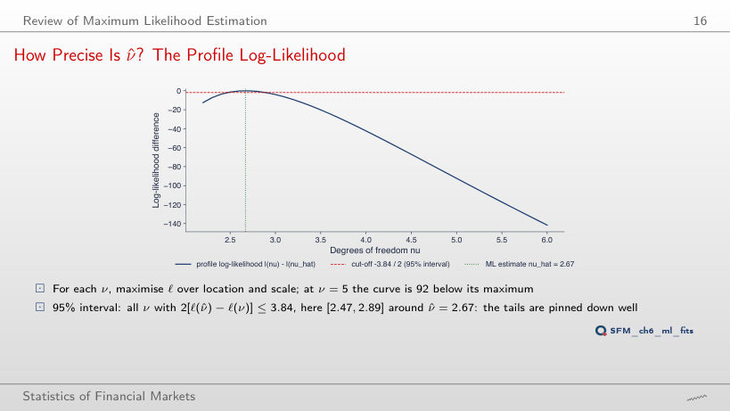
Worked example: is the tested ν inside the interval?
Answer
From 2.5 to 2.8. The true end points, 2.47 and 2.89, lie between grid points (2.4–2.5 and 2.8–2.9); a 0.1 grid read directly would give [2.5, 2.8], an interval that is too narrow. The interval is not symmetric around ν̂ = 2.67: 0.20 to the left, 0.22 to the right, because the profile is not a parabola. At ν = 5, the profile log-likelihood is 92.3 below its maximum.
Nested Models: the Likelihood-Ratio Test
Worked Example: Is the Skewness Parameter Needed?
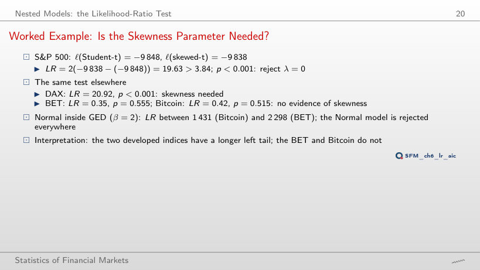
Worked example: the likelihood-ratio test
The same test on the seven series
The p-value as a function of LR
Answer
No: 3.01 < 3.84, p = 0.083. The fixed value λ = 0 lies inside the interval (−1, 1), so Wilks' theorem applies and the critical value is 3.84; 2.71 is the boundary value (Normal inside Student-t). AIC still prefers skewed-t (ΔAIC of Student-t: 1.0), because AIC is not a test: it charges 2 for a parameter, and LR > 2. The skewness is significant only for the S&P 500 (LR = 19.63) and the DAX (20.92).
Non-Nested Models: the Vuong Test
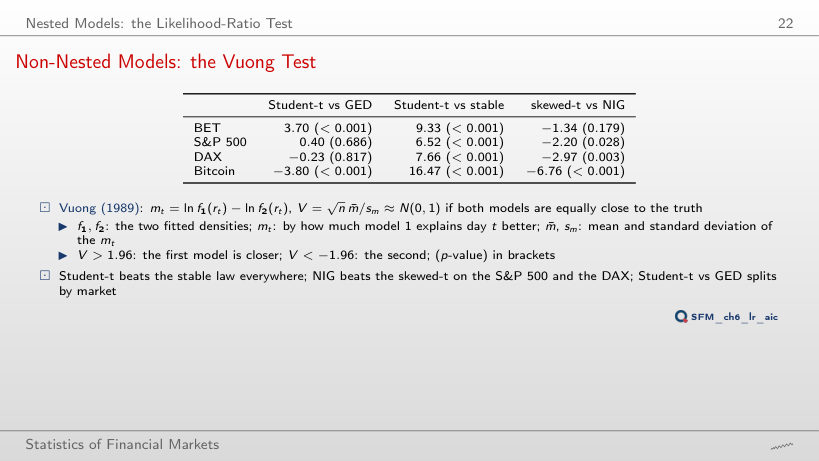
Worked example: the Vuong statistic
The statistic V and its p-value on the seven series
Cumulative sum of the daily differences mt
Answer
No: |V| = 1.89 < 1.96, p = 0.059. Student-t explains the BRD days better on average, but the difference is not separated from noise. The day with the largest |mt| is 19 December 2018 (mt = −2.48: the stable distribution explains this fall better). For TLV and SNP, V = 3.77 and 4.16. The sum of the daily differences is exactly the difference of the log-likelihoods, ℓ(Student-t) − ℓ(stable).
Information Criteria: AIC and BIC
Worked Example: Seven Models for the S&P 500
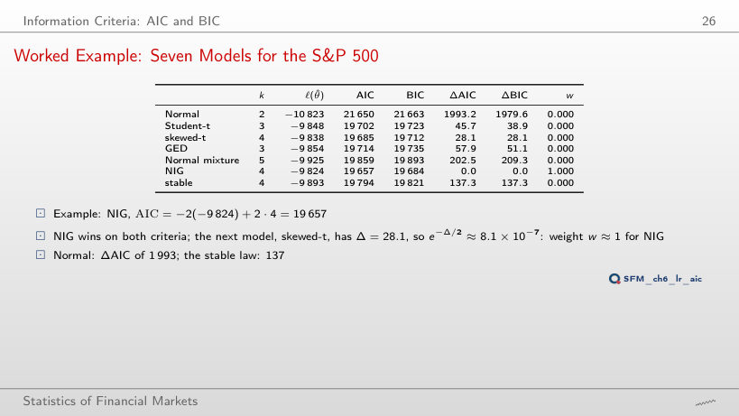
Worked example: AIC, BIC and the Akaike weight
Answer
0.62 for skewed-t and 0.38 for Student-t (the other five models have weights of practically zero): w = e−Δ/2/Σ e−Δj/2, with e−0.5 = 0.61. A difference of 1 leaves both models plausible; AIC is not a test. With BIC weights the order reverses: 0.93 for Student-t.
ΔAIC across Seven Series
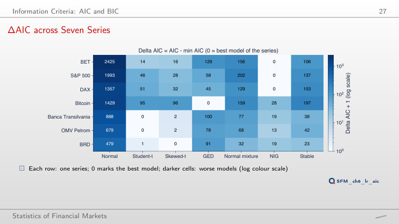
The best model under each criterion
Answer
Student-t, with ΔBIC = 5.2 for skewed-t. BIC charges the extra parameter ln 3,771 = 8.24, more than the gain in fit (LR = 3.01). For TLV and SNP, both criteria choose Student-t; for BET, S&P 500 and DAX, NIG; for Bitcoin, GED. The Normal model has ΔBIC between 472 and 2,412.
Goodness-of-Fit Tests
Worked Example: KS on Five Returns
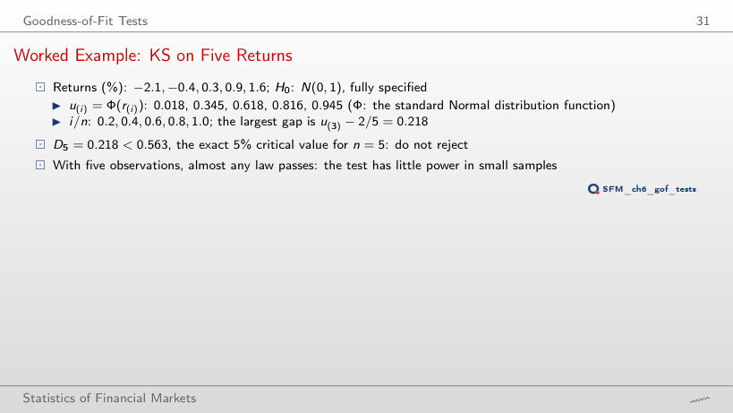
Worked example: the KS statistic
Answer
None: D5 lies between 0.188 (σ = 1.4) and 0.364 (σ = 0.5), always below 0.563. With five observations, the test cannot separate a standard deviation of 0.5% from one of 2%: its power is very low. With μ and σ estimated from the five returns (Lilliefors), D5 = 0.175, and the critical value falls to 0.351 (the lecture's simulation, as on the slide).
Why KS Is Weak in the Tails
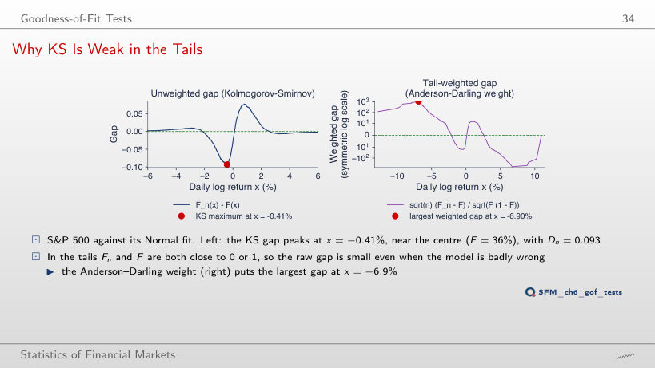
Worked example: the KS distance at its maximum
Answer
Also in the body of the distribution: at x = −1.69% (F = 30%), with Dn = 0.099. For all seven series, the KS maximum lies between x = −1.7% and +1.0%, where the distribution functions are steep. The Anderson–Darling weighted distance is largest in the tail: −6.9% for the S&P 500, −20.1% for Bitcoin. KS measures the shape of the body, AD the shape of the tails.
Power of the Three Tests
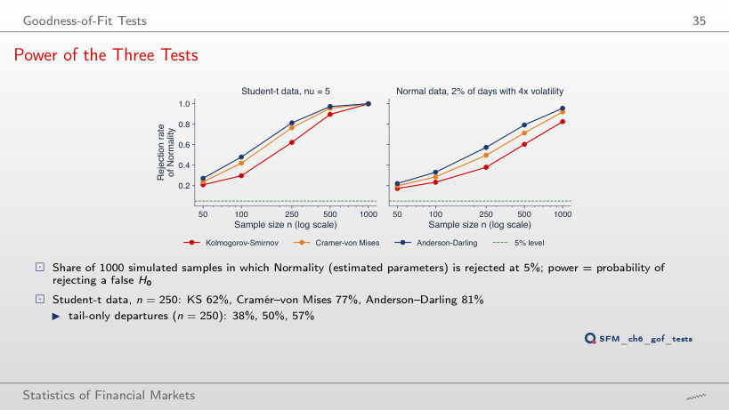
Power at 5%: Student-t data (ν = 5) and Normal data with 2% of days 4 times as volatile
KS critical values at 5%: estimated parameters (simulation, 4,000 samples) and known F
Answer
82.5%, below that of AD (95.6%) and CvM (92.0%). With Student-t data (ν = 5), at n = 1,000 all three reject almost always (99.9%–100%). The AD test puts more weight on the tails, where the departure is. At n = 100, KS rejects Student-t data in only 30% of the samples: a KS test on 100 returns that does not reject the Normal distribution says little about VaR 1%.
EDF Tests on the S&P 500
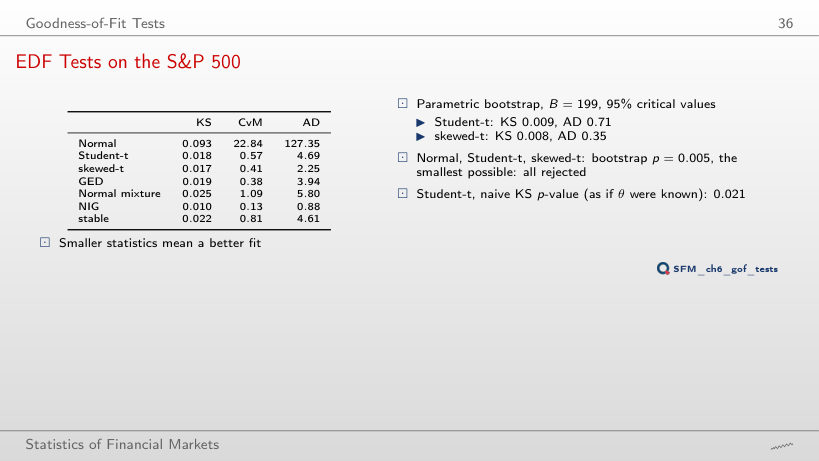
EDF statistics of the fitted models; ranks by AD and by AIC
Answer
Not exactly. By AD: NIG (0.88), skewed-t (2.25), GED (3.94), stable (4.61), Student-t (4.69), Normal mixture (5.80), Normal (127.35). By AIC: NIG, skewed-t, Student-t, GED, stable, Normal mixture, Normal. The first two and the last two places agree; Student-t drops from 3rd to 5th. AD and AIC measure different things: AD the weighted distance between distribution functions, AIC the density at the observed points.
PP and QQ Plots
PP Plots: S&P 500
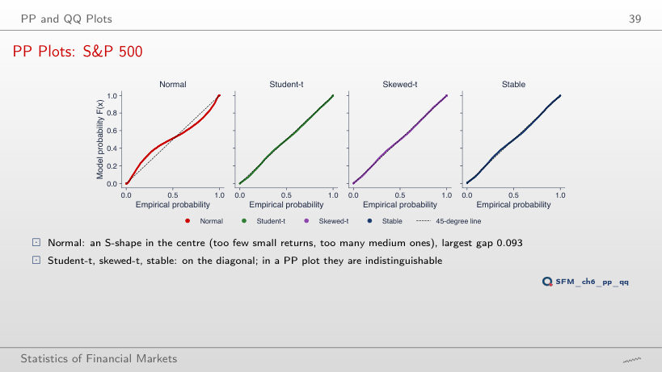
Answer
0.018, practically the KS statistic (0.018). Skewed-t has 0.017, the stable distribution 0.022: in the PP plot the three cannot be told apart, although their tails differ by orders of magnitude. The PP plot squeezes the tails into the corners; the QQ plot on the next slide stretches them.
QQ Plots: S&P 500
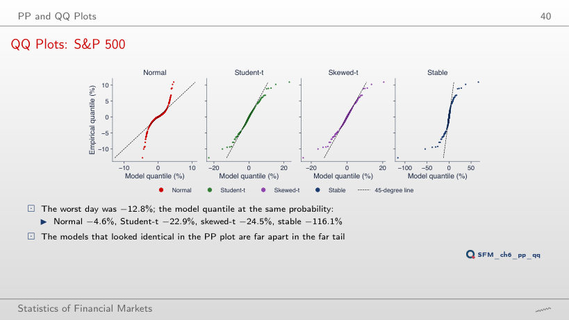
Quantile of each model at the probability of the smallest return, 0.5/n (%)
Answer
−385.6%, more than 8 times the observed value. Student-t gives −85.0%, NIG −31.3%, GED −24.2%, the Normal model −12.7%. At the probability 0.5/n = 1.1 × 10−4, the models differ most and the data hold a single point: the uncertainty is largest there.
QQ Plots for BET, Bitcoin and Banca Transilvania
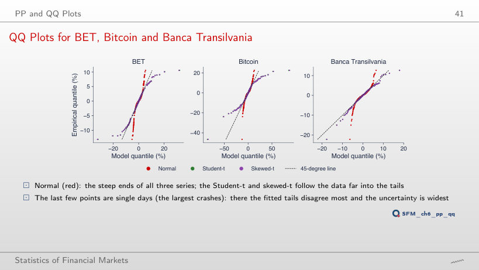
Answer
−51.9%, more than twice the observed return; at the tenth (−15.5%), −22.5%. The Student-t tail fitted to Bitcoin (ν̂ = 2.23) is longer than that of the data. For TLV it is the other way round: the largest fall, −22.2%, has the Student-t quantile −17.8%. The Normal model stays far inside the data for all three series (Bitcoin: −12.7%).
Comparing the Models on VaR 1%
VaR 1% and ES 2.5% under Each Model (In Sample)
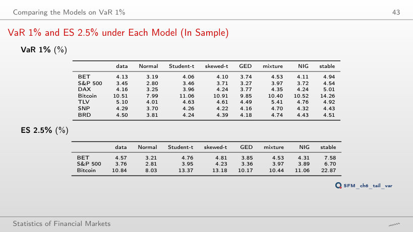
Worked example: VaR and ES of the Normal model
Answer
The Normal model 3.72%, the data 7.22%: at 0.1% the Normal model covers only half of the loss. Student-t gives 8.58%, NIG 6.98%, the stable distribution 19.70%. At VaR 5% the order reverses: the Normal model gives 1.97%, above the data (1.85%). The Normal ES 2.5% from the formula φ(z)/α (2.81%) equals the value obtained by integrating the quantile.
Model VaR 1% Relative to the Data
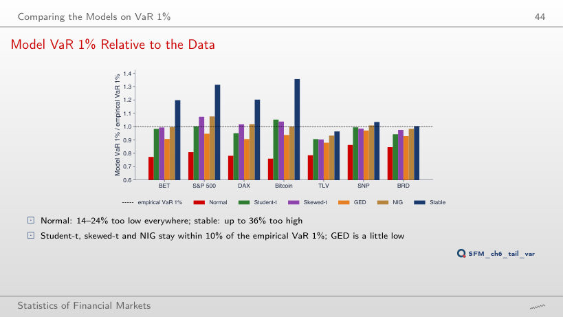
Answer
Above 1 on every series, between 1.03 (DAX) and 1.16 (BET): at 5% the Normal model overstates the loss. The same standard deviation σ̂ is too large for the body of the distribution and too small for its tail; the two errors cancel somewhere between 2.5% and 5%. At 0.1% the ratio falls to 0.45–0.65.
The Left Tail on Log-Log Axes (S&P 500)
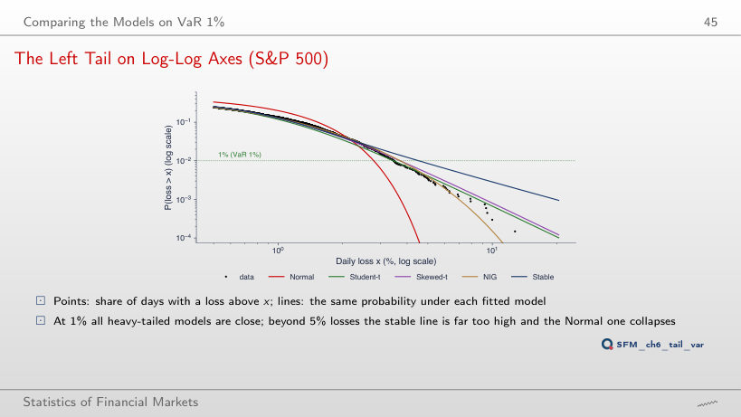
Answer
About 19. The Normal model expects practically zero (probability 7 × 10−17), Student-t 4.5, NIG 1.0, GED 0.08. For losses above 5%, the data have 23 days, the stable expects 57, Student-t 27, NIG 26. The stable tail (α̂ = 1.54) is far too heavy for the S&P 500.
Counting Exceedances: the Kupiec Test
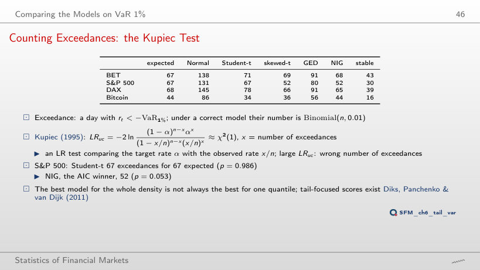
In-sample exceedances (Kupiec p-value in brackets)
Worked example: the Kupiec test
Answer
No: 151 exceedances against 167.9 expected, p = 0.18. Student-t, perfect at 1% (67 against 67), is rejected at 2.5%: 211 exceedances, p = 0.001. A model that is good for one quantile is not necessarily good for another. At VaR 0.1%, NIG has 7 exceedances against 6.7 expected, the Normal model 52.
Out of Sample: Validation and Overfitting
Out-of-Sample Results, 2020–2026
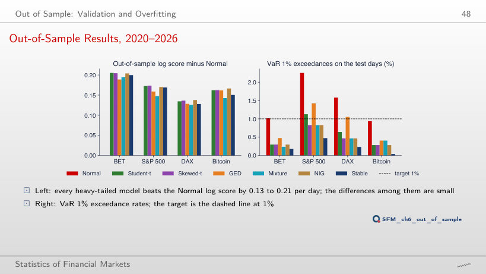
VaR 1% exceedances on the test days, 2020–2026 (Kupiec p-value in brackets)
Worked example: the pinball loss of the 1% quantile
Answer
The Normal model (0.0475), followed by GED (0.0494); Student-t, the best by log score, has 0.0517, and NIG, the AIC winner on 2000–2019, 0.0513. The test period was calmer for BET, and the smaller Normal VaR had 17 exceedances against 16.7 expected. The right number for the wrong reason: a static model does not follow the volatility.
Overfitting: Normal Mixtures with 1 to 6 Components
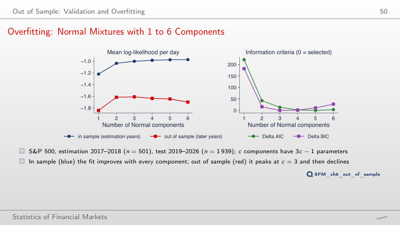
Worked example: AIC and BIC
Answer
From 5.71 (in the slider's steps of 0.1, from 5.8): going from 3 to 4 components gains 2(ℓ4 − ℓ3) = 17.14 for 3 extra parameters, i.e. 5.71 per parameter. Below 0.8, c = 6 is selected, between 0.8 and 3 c = 5, between 3 and 5.71 c = 4. Out of sample the best is c = 3 (−1.608 per day), while c = 6 gives −1.698.
Rolling VaR 1%: Refit Every Month
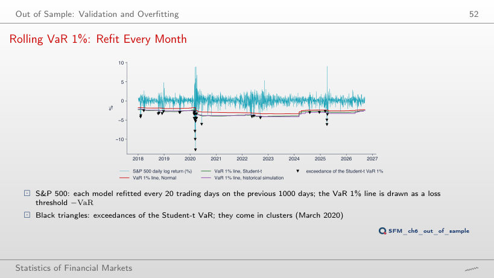
Exceedances per year
Backtest over the whole test period
Worked example: the Christoffersen independence test (extra run)
Answer
No: LRind = 19.81, p < 0.001. After a day with an exceedance, another follows in 10.1% of the cases (9 of 89), against 1.4% after a day without. The exceedances pile up in August 2007, September–November 2008 (6, 9 and 6) and March 2020 (9). For BET, historical simulation passes the Kupiec test (p = 0.066) but not the independence test (p = 0.014).
The VaR Reliability Plot (SFEVaRqqplot)
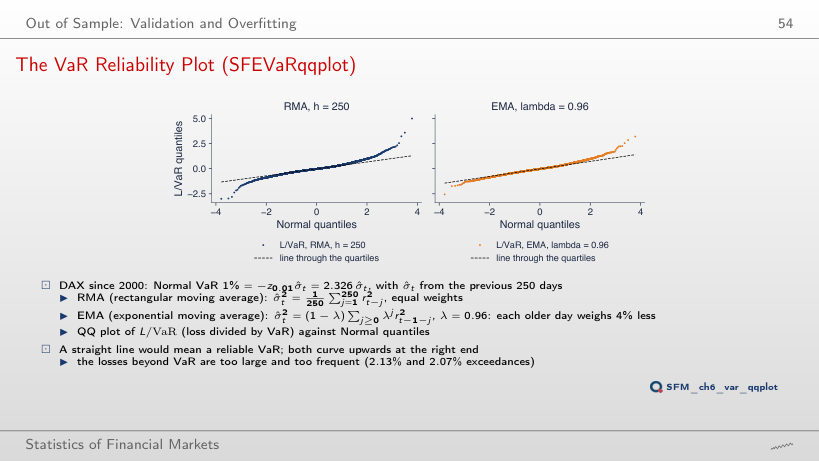
Answer
No: the rate stays between 1.96% (λ = 0.97) and 2.40% (λ = 0.99). The EMA volatility adapts, but the Normal quantile z0.01 = −2.326 remains too small for the standardised returns, whose tails are heavier than those of the Normal distribution: the right end of the QQ plot bends upwards for every λ. RMA with h = 250 has 2.13%; with h = 125, 2.21%.
Model Uncertainty
How Sure Are We of the Winner?
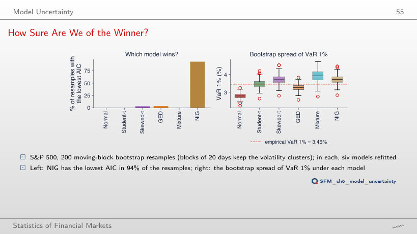
Moving-block bootstrap resamples, S&P 500
Answer
100%: NIG wins all of the first 20. With B = 40, 95%; with B = 100, 95%; with B = 200, 93.5% (GED 3.5%, skewed-t 3%). A small number of resamples overstates the certainty about the winner. The 90% intervals of VaR 1% (Student-t [3.14, 3.87]%, NIG [3.34, 4.18]%) overlap: the uncertainty between models is comparable to the uncertainty within a model.
Model Averaging and Model Risk
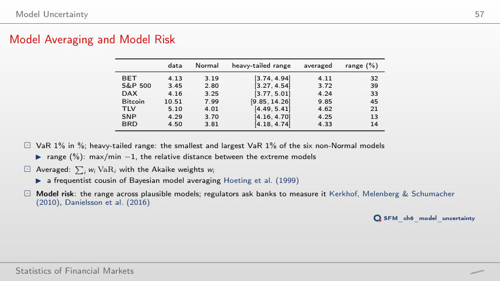
VaR (%) of the data, of the models and averaged
Worked example: the averaged VaR
Answer
The Normal mixture (the mixture column of the lecture's VaR table), one of the six non-Normal models. Without it, the TLV range becomes [4.49, 4.92], 10% instead of 21%. The same holds for SNP (4.70%) and BRD (4.74%). For the indices and Bitcoin, the upper end comes from the stable distribution.
Daily log returns, in %: BET, S&P 500 and DAX from January 2000, Bitcoin from September 2014 (7 days a week), Banca Transilvania (TLV), OMV Petrom (SNP) and BRD from 2010, from the adjusted price, to 18 September 2026; the two erroneous TLV days of May 2016 are removed. Monthly DAX: first trading day of each month (SFESumm). EODHD closing prices. The fitted parameters, log-likelihoods, model quantiles, rolling VaR and bootstrap resamples are those of the lecture (the same code and the same generator seed); the summary statistics, empirical VaR and ES, exceedances, Kupiec tests, pinball losses and the SFEVaRqqplot chart are recomputed in the browser from the same returns. VaR levels other than 1%, the profile of ν for the other series, the Christoffersen test and the BIC weights are extra runs of the same code.